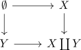

inclusion for a coproduct as cofibration
Proposition
Let $X,Y$ be topological spaces. Then the inclusion $\iota: X \rightarrow X \coprod Y$ is a cofibration
Proof
hands on
Let $Z$ be a topological space,
\begin{align*}
f: X \coprod Y \rightarrow& Z
\end{align*}
be a continuous map and
\begin{align*}
H: [0,1] \times X \rightarrow Z
\end{align*}
a homotopy
Then by glueing lemma for an open covering, we conclude, that
\begin{align*}
\overline{H} [0,1] \times (X \coprod Y) \rightarrow& Z \\
(t,x) \mapsto& H(t,x) & \mbox{if } x \in X \\ \\
(t,y) \mapsto& z
\end{align*}
for a constant point $z \in Z$
categorically
coproduct as pushout from an initial object

since the initial morphism is a cofibration (cf. empty cofibration), it follows, that $\iota: X \rightarrow X \coprod Y$ is also cofibration (cf. initial object in the category of hurewicz cofibrations, cofibration mirrored under pushouts)